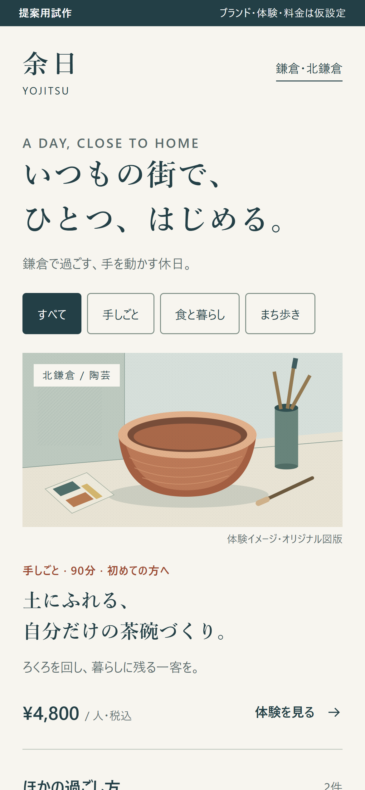
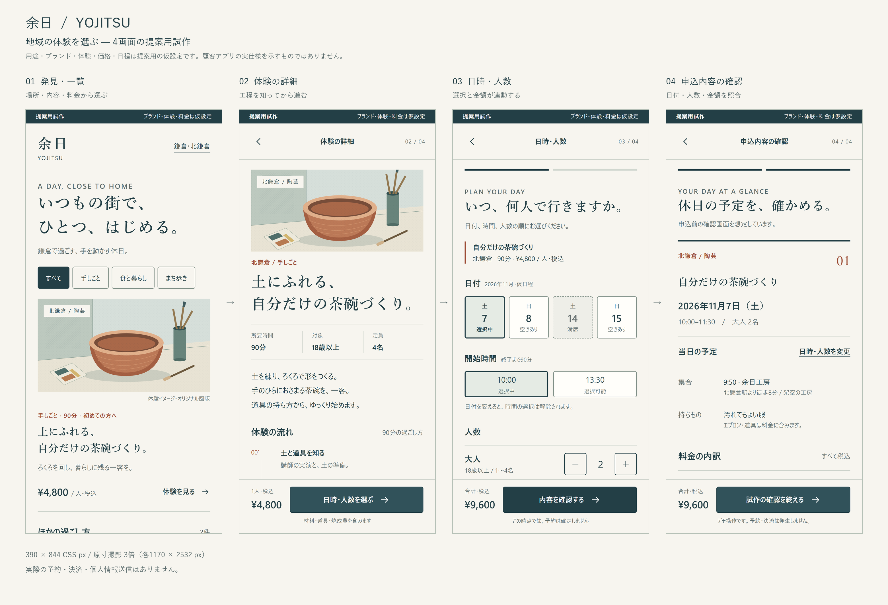
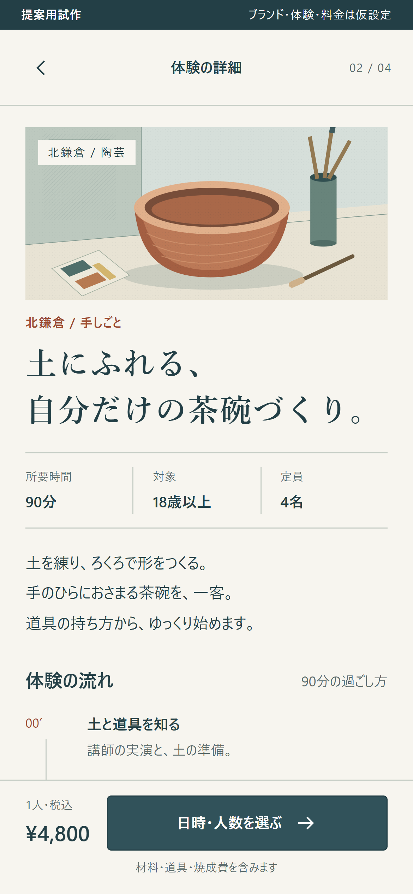
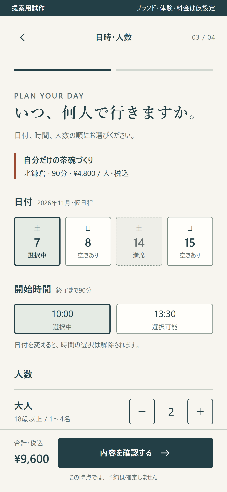
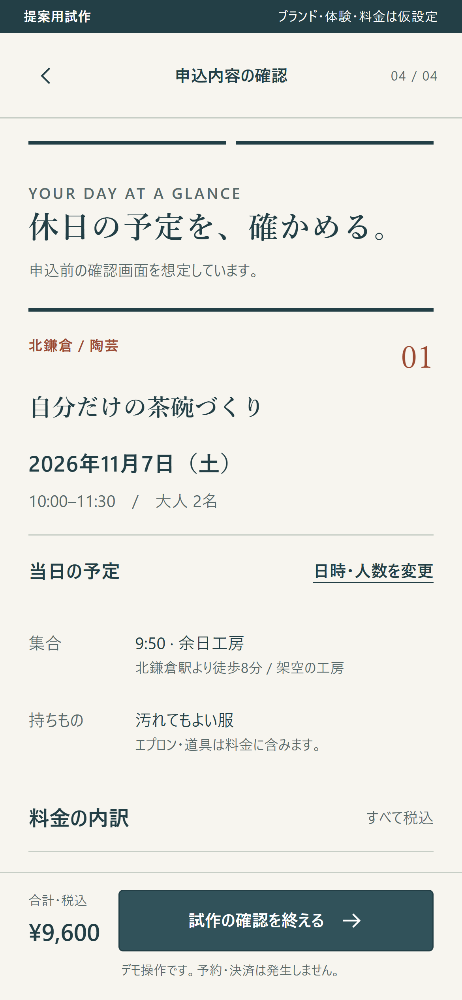

01 / DISCOVER
発見・一覧
場所・体験内容・所要時間・料金を揃え、選ぶ手がかりを近くに。

UI / UX CONCEPT
発見・一覧から、体験の理解、日時・人数の選択、申込前の内容確認まで。
ひとつの体験を選ぶ流れを、操作できる形にしました。
用途・ブランド・体験・工房・料金・日程は、提案用の仮設定です。
実際の予約・決済・個人情報送信はありません。

01 / DISCOVER
場所・体験内容・所要時間・料金を揃え、選ぶ手がかりを近くに。

02 / EXPERIENCE
体験の流れは時間軸で。持ちものや受け取り条件は必要なときに開く構成。

03 / SELECT
日付、時間、人数の順に選択。選択状態と合計金額が連動します。

04 / REVIEW
日付・時刻・人数・金額を照合。変更するときは、選択済みの画面へ戻れます。

重要な情報、次の行動、補足情報の順に整理しました。体験を見つける画面では余白と図版、選択では状態の分かりやすさ、確認では日時と金額の読み取りを重視しています。文字サイズが変わったときにも内容が折り返す構成です。
図版はこの試作のためのオリジナルSVG。既存アプリの固有ロゴ・配色・画面の再現は行っていません。
陶芸体験1件で4画面を操作できます。一覧のお茶・まち歩きは表示イメージです。空き状況や工房には接続していません。選択値はページを開いている間だけ保持し、再読み込みで初期化します。